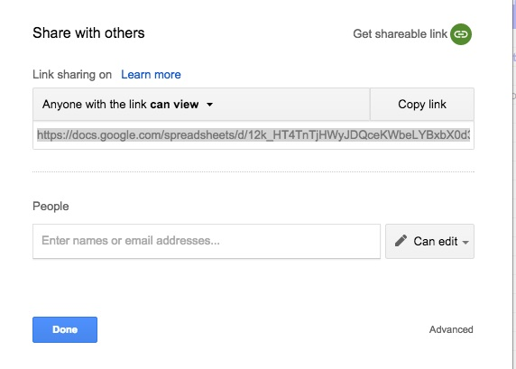

Choosing the right MA question
How do I define my MA question?
Choose the appropriate level of detail for your MA topic. The topic of your meta-analysis should be broader than the one of a single experiment (e.g. “How do babies segment words of different stress patterns?”), but narrower than a whole research field (e.g. “How do babies learn language?”). The goal is to be able to gather comparable papers, measuring consistant dependant variables, to allow you to compute a common statistical metric (i.e. effect size) from them.
Define your population of interest precisely. Homogeneous can mean many things; age, language, typical versus atypical. You may run a meta-analysis where you accept many different levels for some of the variables and see how it affects results, defining them as MA moderators, for example seeing if effects are consistent across ages. There should still be some unifying element in your studies though so you have one broad result of your meta-analysis.
Consider the number of available studies on your topic. Your MA topic also depends on how many studies have been done on it. If you want to run a simple comparative MA, as few as two studies could be okay. But if you want to run an analysis with a lot of moderators, 5 studies probably isn’t enough to warrant a meta-analysis.
Why should I bother keeping track of the MA creation process?
It is important that you build traceability of your work from the start, particularly since in larger MAs other people may finish up the work or you want to check later on why you decided to exclude a given paper. So to make sure that all of your decisions are recorded and clear, make a copy of this decision spreadsheet. Don’t forget to rename it, to give us a “viewing” link, and clean it up as follows.
Step 1: Click on “File” and select the “Make a copy…” option

Step 2: In the window that appears, change the name to something like “MA_TOPIC”

Step 3: Click on the blue button “Share” on the top right.
Step 4: In the menu, click on “Get shareable link” on the top right
Step 5: Copy the link and send it to us.

Step 6: Clean up
The model spreadsheet contains some fake entries and notes. Our recommendation is, so as not to get confused, to remove the instructions found on the top lines of each sheet and the fake information that is already entered - except for a couple of exceptions: the pink columns (A, B and W) in the Relevant_studies_search sheet contain formulas that may be useful to you. So you might want to delete the contents of the other columns and keep those two in order to reuse the formulas.
************
Additionally, make a copy of this flowchart, rename and share as you did for your spreadsheet above. This figure gives you an overview of the process, and you will be filling in the boxes with the right numbers as you go along so that people who continue this MA and/or those interested in assessing this work can make sure that you followed the procedure.